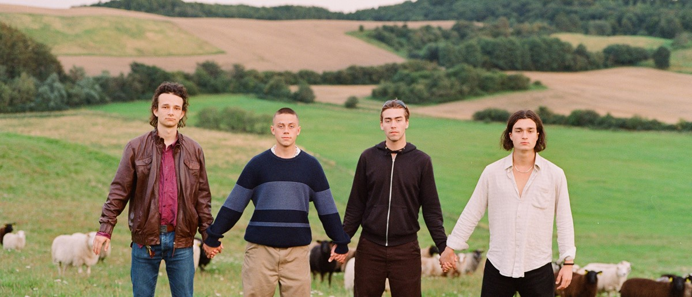

Fra under Radaren til hitlisterne: APCHA og Radar
Radar har altid været stedet, hvor magien opstår. Her finder du et af Aarhus´mest intime koncertsteder, der skaber unikke rammer for upcoming artister og undergrunds musik. Et af de mange talenter, som der har startede deres rejse på Radar Godsbanen, er APCHA, der nu har nået imponerende succes med en plads, som nummer 6 på de danske hitlister.
APCHA og Radar: En Intim Popfest
De fire bandmedlemmer, Rumle, Bertram, Bertil og Noah, mødte hinanden på Det Frie Gymnasium på Nørrebro i København. Gymnasiets demokratiske og kreative kultur gav dem modet til at udtrykke sig gennem musik. Radar havde fornøjelsen af at give dem et sted, hvor de kunne bringe deres unikke energi og kreative poplyd ud til publikum. Da APCHA spillede på Radar, forvandlede de scenen til en eksplosiv og intim popfest, som ingen i salen vil glemme. Det var en oplevelse, der bekræftede, hvad Radar kan: At skabe rammerne for, at nye talenter kan blomstre og fange publikums hjerter.
Radar som Springbræt
APCHA er et fantastisk eksempel på, hvordan Radar fungerer som et springbræt for nichegenrer og upcoming artister. Radars intime rammer giver en fantastisk mulighed for, at dele musikken sammen. Radar er en vigtig del af den danske musikscene og en central spiller indenfor koncerter i Aarhus At se APCHA tage skridtet fra Radar til de danske hitlister viser, hvor vigtig Radar er for musiklivet i Aarhus. Det er en også en påmindelse om, at Radar er et centrum for undergrundsmusik og kulturarrangementer i Aarhus
Har du ikke hørt APCHA endnu?
Hvis du endnu ikke har oplevet APCHA’s fantastiske energiske poplyd, er det tid til at give dem et lyt. Eller måske er du allerede fan? Uanset hvad, kan du dykke ned i deres musik nedenfor og lade dig rive med af deres unikke lyd.